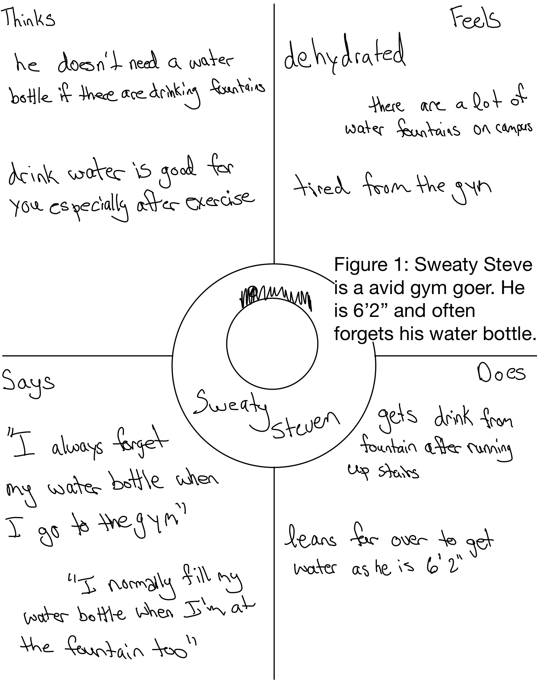
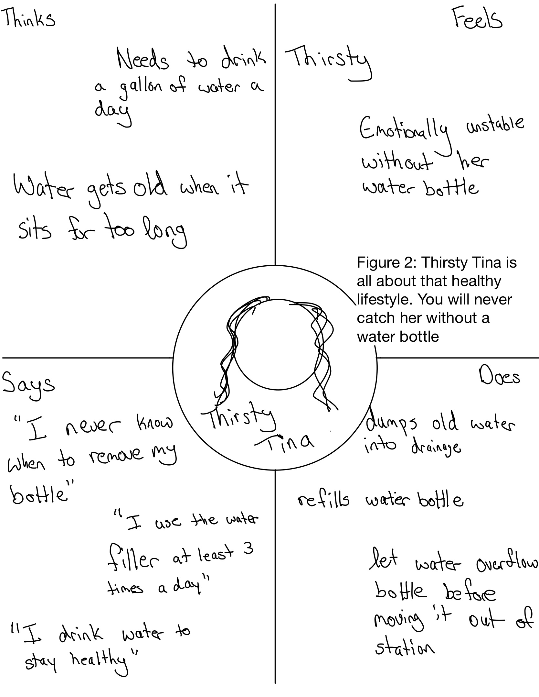

overview
The goal of this project was to create personas and
part 1
preparation
 The interface I choose is the water filling stations in Wellness.
Everyone has access to these as they are seen in Health Services
although for my specific personas I focused on the ones in the dorm
hallways. In this interface, you can fill water bottles and also drink
from one of the two water fountains. You can activate the water to drink
by the front or side buttons and the water for filling the water bottle
is activated by a sensor.
The interface I choose is the water filling stations in Wellness.
Everyone has access to these as they are seen in Health Services
although for my specific personas I focused on the ones in the dorm
hallways. In this interface, you can fill water bottles and also drink
from one of the two water fountains. You can activate the water to drink
by the front or side buttons and the water for filling the water bottle
is activated by a sensor.
part 2
recording observations
Watching the user interact with the interface I noticed some key things. Everyone who went to drink water pushed two buttons whether it was the two in the front or the two on the side. Height definitely played a factor in how easy the fountain was to use as those who were taller had difficulty leaning down to drink. Those using the water filter station acted in two manners. A lot kept their hand on their water bottle while it was filling while others stuck it underneath and paced around as it filled. When it came to removing the bottle, the bottle had either overflowed which indicated it needed to be removed or they stopped it with a small but noticeable amount left to fill.
interview summary
Questions:
part 3
persona diagrams
Persona #1 Sweaty Steven
Persona #2 Thirsty Tina